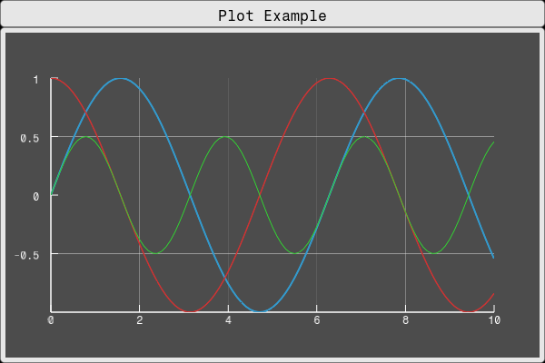
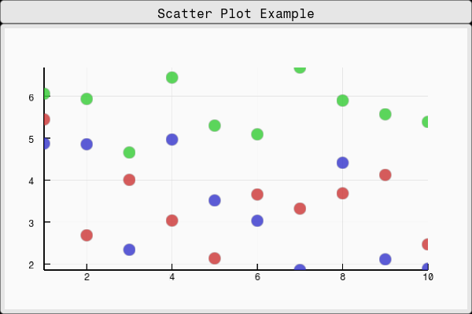
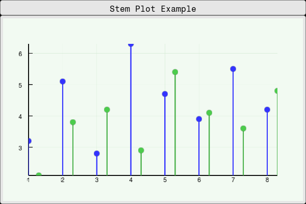
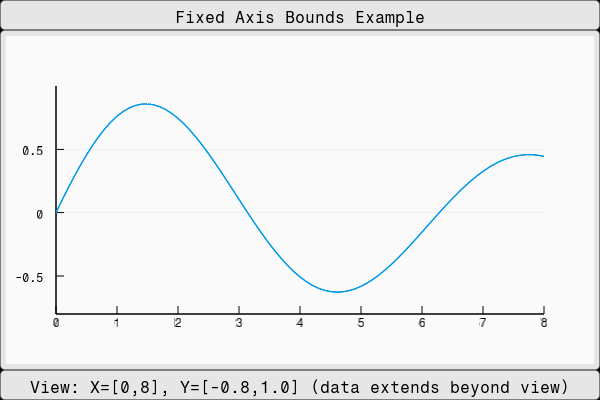
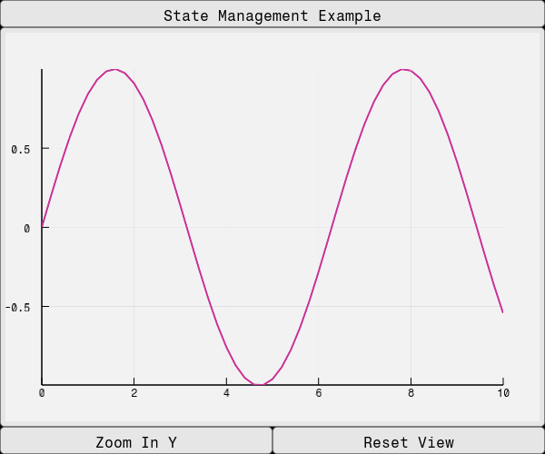

Plot
using Fugl
using Fugl: Text, LinePlotElement, SOLID, DASH, DOT
function MyApp()
# Generate sample data for demonstration
x_data = collect(0.0:0.1:10.0)
y1_data = sin.(x_data)
y2_data = cos.(x_data)
y3_data = sin.(x_data .* 2) .* 0.5
# Create multiple plot elements with different colors and styles
elements = [
LinePlotElement(y1_data; x_data=x_data,
color=Vec4{Float32}(0.2, 0.6, 0.8, 1.0),
width=3.0f0,
line_style=SOLID,
)
LinePlotElement(y2_data; x_data=x_data,
color=Vec4{Float32}(0.8, 0.2, 0.2, 1.0),
width=2.5f0,
line_style=DASH,
)
LinePlotElement(y3_data; x_data=x_data,
color=Vec4{Float32}(0.2, 0.8, 0.2, 1.0),
width=2.0f0,
line_style=DOT,
)
]
IntrinsicColumn([
IntrinsicHeight(Container(Text("Plot Example"))),
Container(
Plot(
elements,
PlotStyle(
background_color=Vec4{Float32}(0.3, 0.3, 0.3, 1.0), # Gray background
grid_color=Vec4{Float32}(0.9, 0.9, 0.9, 1.0), # Light gray grid
axis_color=Vec4{Float32}(1.0, 1.0, 1.0, 1.0), # White axes
show_grid=true,
show_axes=true,
padding_px=50.0f0
)
)
),
], padding=0.0, spacing=0.0)
end
screenshot(MyApp, "linePlot.png", 600, 400);
Scatter Plot Example
using Fugl
using Fugl: Text, ScatterPlotElement, CIRCLE, TRIANGLE, RECTANGLE
function MyApp()
# Generate sample data for scatter plot
x_data = collect(1:10)
y1_data = rand(10) .* 5 .+ 2 # Random data between 2-7
y2_data = rand(10) .* 3 .+ 4 # Random data between 4-7
y3_data = rand(10) .* 4 .+ 1 # Random data between 1-5
# Create scatter plot elements with different marker types
elements = [
ScatterPlotElement(y1_data; x_data=x_data,
fill_color=Vec4{Float32}(0.8, 0.2, 0.2, 0.8),
border_color=Vec4{Float32}(0.5, 0.1, 0.1, 1.0),
marker_size=8.0f0,
border_width=2.0f0,
marker_type=CIRCLE,
)
ScatterPlotElement(y2_data; x_data=x_data,
fill_color=Vec4{Float32}(0.2, 0.8, 0.2, 0.8),
border_color=Vec4{Float32}(0.1, 0.5, 0.1, 1.0),
marker_size=8.0f0,
border_width=2.0f0,
marker_type=TRIANGLE,
)
ScatterPlotElement(y3_data; x_data=x_data,
fill_color=Vec4{Float32}(0.2, 0.2, 0.8, 0.8),
border_color=Vec4{Float32}(0.1, 0.1, 0.5, 1.0),
marker_size=8.0f0,
border_width=2.0f0,
marker_type=RECTANGLE,
)
]
IntrinsicColumn([
IntrinsicHeight(Container(Text("Scatter Plot Example"))),
Container(
Plot(
elements,
PlotStyle(
background_color=Vec4{Float32}(0.98, 0.98, 0.98, 1.0), # Light background
grid_color=Vec4{Float32}(0.85, 0.85, 0.85, 1.0), # Gray grid
axis_color=Vec4{Float32}(0.0, 0.0, 0.0, 1.0), # Black axes
show_grid=true,
show_axes=true,
padding_px=50.0f0,
anti_aliasing_width=1.5f0
)
)
),
], padding=0.0, spacing=0.0)
end
screenshot(MyApp, "scatterPlot.png", 600, 400);
Stem Plot Example
using Fugl
using Fugl: Text, StemPlotElement, CIRCLE, TRIANGLE
function MyApp()
# Generate sample data for stem plot
x_data = collect(1:8)
y1_data = [3.2, 5.1, 2.8, 6.3, 4.7, 3.9, 5.5, 4.2]
y2_data = [2.1, 3.8, 4.2, 2.9, 5.4, 4.1, 3.6, 4.8]
# Create stem plot elements
elements = [
StemPlotElement(y1_data; x_data=x_data,
line_width=3.0f0,
marker_size=6.0f0,
border_width=1.5f0,
marker_type=CIRCLE,
baseline=0.0f0,
)
StemPlotElement(y2_data; x_data=x_data .+ 0.3, # Offset x slightly for visibility
line_color=Vec4{Float32}(0.3, 0.7, 0.3, 1.0), # Green stems
fill_color=Vec4{Float32}(0.3, 0.8, 0.3, 1.0), # Green markers
border_color=Vec4{Float32}(0.0, 0.3, 0.0, 1.0), # Dark green border
line_width=3.0f0,
marker_size=6.0f0,
border_width=1.5f0,
marker_type=TRIANGLE,
baseline=0.0f0,
)
]
IntrinsicColumn([
IntrinsicHeight(Container(Text("Stem Plot Example"))),
Container(
Plot(
elements,
PlotStyle(
background_color=Vec4{Float32}(0.95, 0.98, 0.95, 1.0), # Light green background
grid_color=Vec4{Float32}(0.8, 0.9, 0.8, 1.0), # Light green grid
axis_color=Vec4{Float32}(0.0, 0.0, 0.0, 1.0), # Black axes
show_grid=true,
show_axes=true,
padding_px=50.0f0,
anti_aliasing_width=1.5f0
)
)
),
], padding=0.0, spacing=0.0)
end
screenshot(MyApp, "stemPlot.png", 600, 400);
Fixed Axis Bounds Example
using Fugl
using Fugl: Text, LinePlotElement, SOLID
function MyApp()
# Generate sample data that extends beyond our desired view
x_data = collect(-2.0:0.1:12.0)
y_data = sin.(x_data) .* exp.(-x_data ./ 10)
# Create plot element
elements = [
LinePlotElement(y_data; x_data=x_data,
color=Vec4{Float32}(0.0, 0.6, 0.9, 1.0),
width=2.5f0,
line_style=SOLID,
)
]
IntrinsicColumn(
[
IntrinsicHeight(Container(Text("Fixed Axis Bounds Example"))),
Container(
Plot(
elements,
PlotStyle(
background_color=Vec4{Float32}(0.98, 0.98, 0.98, 1.0),
grid_color=Vec4{Float32}(0.85, 0.85, 0.85, 1.0),
axis_color=Vec4{Float32}(0.0, 0.0, 0.0, 1.0),
show_grid=true,
show_axes=true,
padding_px=50.0f0
),
PlotState(
# Fixed axis bounds - only show x from 0 to 8, y from -0.8 to 1.0
initial_x_min=0.0f0,
initial_x_max=8.0f0,
initial_y_min=-0.8f0,
initial_y_max=1.0f0
),
)
),
IntrinsicHeight(Container(Text("View: X=[0,8], Y=[-0.8,1.0] (data extends beyond view)"))),
], padding=0.0, spacing=0.0
)
end
screenshot(MyApp, "fixedBoundsPlot.png", 600, 400);
State Management Example
using Fugl
using Fugl: Text, TextButton, LinePlotElement, SOLID
function MyApp()
# Generate sample data
x_data = collect(0.0:0.2:10.0)
y_data = sin.(x_data)
elements = AbstractPlotElement[
LinePlotElement(y_data; x_data=x_data,
color=Vec4{Float32}(0.8, 0.2, 0.6, 1.0),
width=3.0f0,
line_style=SOLID,
)
]
# Create simple plot state for zoom control with initial view bounds
plot_state = Ref(PlotState())
# Define plot style with initial view
plot_style = PlotStyle(
background_color=Vec4{Float32}(0.95, 0.95, 0.95, 1.0),
grid_color=Vec4{Float32}(0.8, 0.8, 0.8, 1.0),
axis_color=Vec4{Float32}(0.0, 0.0, 0.0, 1.0),
show_grid=true,
show_axes=true,
padding_px=40.0f0
)
IntrinsicColumn([
IntrinsicHeight(Container(Text("State Management Example"))),
# Plot with user-managed state - elements and bounds from state
Container(
Plot(
elements, # Elements define what to plot
plot_style, # Style defines visual appearance
plot_state[], # State contains bounds and zoom info
(new_state) -> plot_state[] = new_state
)
),
# Control buttons that modify the plot state
IntrinsicHeight(
IntrinsicRow([
TextButton("Zoom In Y";
on_click=() -> begin
current_state = plot_state[]
# Get current Y bounds (or use initial if not set)
y_min = something(current_state.current_y_min, current_state.initial_y_min, -1.0f0)
y_max = something(current_state.current_y_max, current_state.initial_y_max, 1.0f0)
# Zoom in by 20%
y_center = (y_min + y_max) / 2
y_range = (y_max - y_min) * 0.8f0
new_y_min = y_center - y_range / 2
new_y_max = y_center + y_range / 2
# Create new state with updated bounds (clean API - no elements!)
plot_state[] = PlotState(
current_state.bounds,
current_state.auto_scale,
current_state.initial_x_min,
current_state.initial_x_max,
current_state.initial_y_min,
current_state.initial_y_max,
current_state.current_x_min,
current_state.current_x_max,
new_y_min,
new_y_max
)
end
),
TextButton("Reset View";
on_click=() -> begin
current_state = plot_state[]
# Reset to initial view bounds
plot_state[] = PlotState(
current_state.bounds,
current_state.auto_scale,
current_state.initial_x_min,
current_state.initial_x_max,
current_state.initial_y_min,
current_state.initial_y_max,
current_state.initial_x_min,
current_state.initial_x_max,
current_state.initial_y_min,
current_state.initial_y_max
)
end
)
], padding=0.0, spacing=0.0)
),
], padding=0.0, spacing=0.0)
end
screenshot(MyApp, "stateManagementPlot.png", 600, 500);